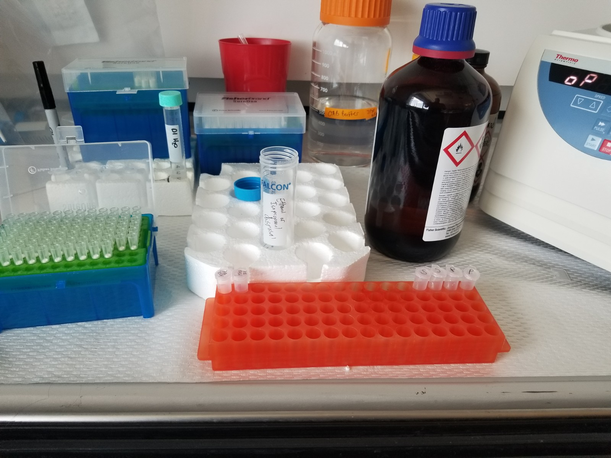

eDNA Surveillance


Our waters face growing threats from non-native species that spread quickly and disrupt balance. In partnership with SLELO PRISM, and using cutting-edge environmental DNA (eDNA), we can spot invaders early and give the Great Lakes a fighting chance.

Golden Walleye

A rare golden walleye fish was caught in the waters of Lake Ontario. Learn more about this popular game fish!